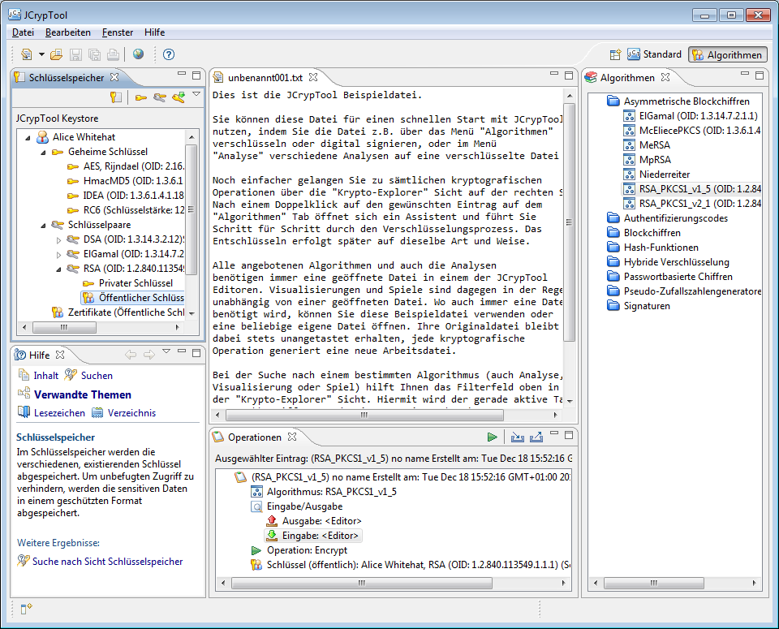

Die Algorithmen-Perspektive bietet einen Funktions-orientierten Zugriff auf die in JCrypTool enthaltene Krypto-Bibliothek FlexiProvider. Die in dieser Perspektive angezeigten Algorithmen passen sich dabei dynamisch dem Umfang der jeweiligen FlexiProvider Version an, d.h. eine neue Version der FlexiProvider Bibliothek mit neuen oder erweiterten Algorithmen führt automatisch zu neuen/ erweiterten dynamischen Assistenten.

Alle Assistenten bieten dabei einen einfachen Modus mit Standardwerten und einen fortgeschrittenen Modus in dem nahezu alle Parameter von Ihnen angepasst werden können.
Beachten Sie in der Algorithmen-Perspektive das eingeschränkte Menü: die in der Standard-Perspektive vorhandenen Krypto-Menüs (z.B. Algorithmen oder Visualisierungen) werden hier ausgeblendet, so dass Sie sich vollkommen auf den FlexiProvider konzentrieren können.